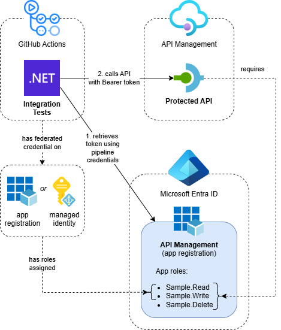
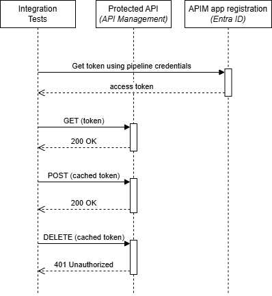

Call OAuth-Protected APIs from GitHub Actions Using Federated Credentials

When I build APIs, I like to execute automated integration tests from my pipeline after deployment. When the APIs are protected with OAuth, we need a way to retrieve a valid JWT token when calling them from a test. In this post, I’ll show how to do this from a GitHub Actions workflow using federated credentials.
This post is part of a series about OAuth and API Management:
- Protect APIs in Azure API Management with OAuth
- Calling OAuth-Protected APIs with Managed Identity
- Calling OAuth-Protected Backends from API Management
- Calling OAuth-Protected APIs from CI/CD Pipelines using Federated Credentials
- Part 1: GitHub Actions - this post
- Part 2: Azure DevOps
Table of Contents
- Solution Overview
- Setting Up Federated Credentials
- Granting API Access to the Principal
- Creating Integration Tests
- Executing Tests in GitHub Actions
- Supporting Local Development
- Considerations
- Conclusion
Solution Overview
The solution demonstrates how to execute integration tests against OAuth-protected APIs from GitHub Actions using OpenID Connect (OIDC) with federated credentials:

- GitHub Actions Workflow: Uses OIDC to authenticate with Azure using federated credentials
- Azure API Management: Hosts the OAuth-protected API that we want to test
- Integration Tests: .NET tests that authenticate using Azure CLI credentials and call the protected API
- Entra ID App Registration: Represents the protected APIs and defines available app roles
While this example uses an API on API Management, the same approach applies when calling any other API protected with OAuth using Entra ID.
The Entra ID configuration follows the same pattern described in Protect APIs in Azure API Management with OAuth. The key difference is that we assign the Sample.Read and Sample.Write app roles to the GitHub Actions principal in Azure instead of client app registrations.
The tests are written in .NET and use the Azure Identity library for authentication. They can use the pipeline principal to obtain a valid JWT token for API calls:

The implementation is straightforward with four main steps:
- Setup OIDC with federated credentials for GitHub actions (managed identity or app registration)
- Grant the principal app roles on the API
- Create integration tests using Azure Identity library to authenticate with Azure CLI credentials
- In the workflow: Log into Azure with Azure CLI using the federated credentials and execute tests
I’ve created an Azure Developer CLI (azd) template called Call API Management with Managed Identity that demonstrates several scenarios related to calling OAuth-Protected APIs with managed identities. If you want to deploy and try the solution, check out the getting started section for the prerequisites and deployment instructions. This post focuses on calling OAuth-protected APIs from GitHub Actions using federated credentials.
Setting Up Federated Credentials
In order to connect from GitHub Actions to Azure using OpenID Connect (OIDC), a Microsoft Entra application or managed identity with federated identity credentials needs to be set up.
You can configure this manually by following Use the Azure Login action with OpenID Connect. However, if you’re using the Azure Developer CLI, you can follow the instructions in Setting Up the Pipeline which simplifies this process.
The sample template deploys resources in Entra ID. When using the same principal for deployment and integration tests, make sure to follow the instructions on Setting Up the Pipeline to select the right type of principal and configure the necessary permissions.
Granting API Access to the Principal
Once you have the federated credentials configured, the principal needs to be assigned app roles from the app registration that represents your protected API. This is exactly the same process as we’ve used in previous posts of this series when assigning roles to a client app registration or managed identity.
Here’s how to do this with Bicep:
resource assignSampleReadToValidClient 'Microsoft.Graph/appRoleAssignedTo@v1.0' = {
resourceId: apimServicePrincipal.id
appRoleId: appRoleId
principalId: pipelineServicePrincipal.id
}
Properties explained:
resourceId: The ID of the service principal that represents the protected API (the resource being accessed)appRoleId: The ID of the specific app role being granted (e.g. Sample.Read or Sample.Write)principalId: The ID of the service principal that’s being granted the role (the GitHub Actions principal)
In my sample template, I’m using deployer().objectId for the principalId so I can use the same principal for deployment and to execute the tests. This ensures that the pipeline has the necessary permissions when the template is deployed from the pipeline.
When the template is deployed locally, the user will be granted the necessary permissions so they can run the integration tests from their local machine.
Creating Integration Tests
The integration tests use the Azure Identity library to authenticate with Azure and obtain JWT tokens for API calls. Here’s an example test method:
[TestMethod]
public async Task GetAsync_PipelineHasSufficientPermissionsToCallProtected_200OkReturned()
{
// Arrange
var httpClient = new HttpClient
{
BaseAddress = new Uri("https://<your-api-management-service-name>.azure-api.net")
};
// Create token credential that uses either the Azure CLI or Azure Developer CLI credentials
var tokenCredential = new ChainedTokenCredential(
new AzureCliCredential(),
new AzureDeveloperCliCredential());
// Retrieve JWT access token and use it in the Authorization header
var tokenResult = await tokenCredential.GetTokenAsync(
new TokenRequestContext(["<application-id-uri>/.default"]));
httpClient.DefaultRequestHeaders.Authorization =
new AuthenticationHeaderValue("Bearer", tokenResult.Token);
// Act
var response = await httpClient.GetAsync("protected");
// Assert
Assert.AreEqual(HttpStatusCode.OK, response.StatusCode, "Unexpected status code returned");
}
Replace <your-api-management-service-name> with your API Management service name and <application-id-uri> with your Application ID URI, such as api://apim-managedidentity-sdc-wcazc.
The code uses a ChainedTokenCredential that tries both Azure CLI and Azure Developer CLI credentials. This provides flexibility for different authentication scenarios.
The TokenRequestContext specifies the scope for the token request. This should be the ‘Application ID URI’ of the app registration representing the protected API. Make sure to include the /.default suffix. Without it, retrieving a token with AzureDeveloperCliCredential will fail.
The retrieved token is used in the Authorization header of the HTTP request to call the protected API.
Executing Tests in GitHub Actions
Here’s a simplified snippet from the integration test job in the azure-dev.yml workflow of the template:
integration-tests:
name: Execute Integration Tests
needs: deploy
runs-on: ubuntu-latest
permissions:
id-token: write # Required to fetch an OIDC token for Azure authentication
steps:
- name: Setup .NET 9
uses: actions/setup-dotnet@v4
with:
dotnet-version: '9.0.x'
- name: Download Integration Tests Package
uses: actions/download-artifact@v4
with:
name: integration-tests-package
path: ./artifacts/integration-tests
# Login to the Azure CLI with OpenID Connect (OIDC) using federated identity credentials.
# This is necessary for the integration test to access Azure resources if needed.
- name: Azure CLI Login
uses: azure/login@v2
with:
client-id: ${{ secrets.AZURE_CLIENT_ID }}
tenant-id: ${{ secrets.AZURE_TENANT_ID }}
subscription-id: ${{ secrets.AZURE_SUBSCRIPTION_ID }}
- name: Run Integration Tests
run: |
dotnet ./artifacts/integration-tests/IntegrationTests.dll --report-trx --results-directory ./artifacts/integration-tests/TestResults
working-directory: ./
- name: Upload Test Results
if: always()
uses: actions/upload-artifact@v4
with:
name: integration-test-results
path: ./artifacts/integration-tests/TestResults/
retention-days: 1
The critical components are:
- Permissions: The
id-token: writepermission is required to fetch an OIDC token for Azure authentication - Azure CLI Login: This step uses the
azure/login@v2action to authenticate with Azure using OIDC and the federated credentials - Environment: Once logged in, the Azure CLI credentials are available to the integration tests
After the Azure CLI login step, the integration tests can use the AzureCliCredential to obtain tokens for calling protected APIs.
Microsoft.Testing.Platform is used to execute the tests, so we don’t need to use
dotnet test.
Supporting Local Development
You don’t just want to run these integration tests from a pipeline, but also locally while developing them. When running tests locally, the Azure CLI or Azure Developer CLI will use your user credentials. However, with the setup we’ve used so far, retrieving a token will fail because it only works for service principals using the client credential flow.
To support local development, we need to add a scope to the app registration that represents the API. In Bicep, we can use the oauth2PermissionScopes property of the Microsoft.Graph/application resource:
var apiAccessScope = 'API.Access'
resource apimAppRegistration 'Microsoft.Graph/applications@v1.0' = {
api: {
// Add OAuth2 permission scope so users can request an access token to access the API
oauth2PermissionScopes: [
{
id: guid(tenantId, name, apiAccessScope)
adminConsentDescription: 'Allows API access for users'
adminConsentDisplayName: apiAccessScope
isEnabled: true
type: 'User'
userConsentDescription: null
userConsentDisplayName: null
value: apiAccessScope
}
]
}
}
This creates a delegated permission scope that allows users (not just service principals) to request access tokens for the API.
I’ve excluded other configuration like the app roles for brevity. See apim-app-registration.bicep for the complete configuration.
Once deployed, you can see the new scope in the ‘Expose an API’ screen of the app registration:

We also need to ensure that the Azure CLI is granted permission to retrieve tokens on behalf of the user. You can add the Azure CLI to the ‘Authorized client applications’ section of the app registration in the ‘Expose an API’ screen. Authorizing a client application indicates that this API trusts the application and users should not be asked to consent when the client calls this API.

I tried to configure this through Bicep by setting the preAuthorizedApplications property on the Microsoft.Graph/applications resource. However, this failed because the delegated permission couldn’t be found, since the oauth2PermissionScopes is created at the same time.
Instead, I’m using the Microsoft.Graph/oauth2PermissionGrants resource:
// Get Azure CLI service principal, create it if does not exist
@onlyIfNotExists()
resource azureCliServicePrincipal 'Microsoft.Graph/servicePrincipals@v1.0' = {
appId: '04b07795-8ddb-461a-bbee-02f9e1bf7b46'
}
// Add OAuth2 permission grant to allow the Azure CLI service principal to access the API Management app registration impersonating a user
// NOTE: The user still needs to be granted app roles in order to access the API
resource oauth2PermissionGrantForAzureCli 'Microsoft.Graph/oauth2PermissionGrants@v1.0' = {
clientId: azureCliServicePrincipal!.id
resourceId: apimServicePrincipal.id
consentType: 'AllPrincipals'
scope: apiAccessScope
}
This configuration does the following:
- Creates a service principal for the Azure CLI if it doesn’t exist.
The service principal is required to grant permissions to, and it didn’t exist in my tenant initially. Note that04b07795-8ddb-461a-bbee-02f9e1bf7b46is a well-known ID for the Azure CLI. You can find an extensive list of Microsoft first-party services and their IDs here. - Adds an OAuth2 permission grant that allows the Azure CLI service principal to access our API registration on behalf of users
- Uses
consentType: 'AllPrincipals'to grant this permission for all users in the tenant
Even with this permission grant, users still need to be assigned app roles to successfully access the API, as we’re doing under Granting API Access to the Principal. The permission grant only allows the Azure CLI to request tokens; the actual API authorization still depends on the assigned roles.
After the service principal is created for the Azure CLI, it can be found under Enterprise Applications. The Azure Developer CLI currently uses the same client ID as the Azure CLI.

Shout-out to Dan Rios for this approach, which I learned from his blog post Securing API to API calls in Azure with Entra and API Management.
Considerations
There are several considerations when implementing this approach:
User API Access: You might not want to allow users to call your APIs if this isn’t necessary for your application. Consider making it optional and only allowing it in development environments so developers can create and test their integration tests from their local machines. Don’t allow it in other environments unless required. The azd template used in this blog post has a parameter called allowApiAccessForUsers that is used to conditionally deploy the resources required to allow users access to the API.
Credential Separation: In my azd template, I’m using the same service principal to deploy the resources to Azure and to execute the integration tests for convenience. In a real-world scenario, you might want to separate these into different credentials to follow the principle of least privilege. Use one for deploying resources and another for integration tests.
Conclusion
Using federated credentials with GitHub Actions provides a secure and maintainable way to execute integration tests against OAuth-protected APIs. The approach eliminates the need to manage secrets in your CI/CD pipeline while providing the flexibility to run tests both in the pipeline and during local development.
The key benefits of this approach include:
- No secret management: Federated credentials eliminate the need to store and rotate client secrets
- Secure authentication: OIDC provides a secure, industry-standard way to authenticate with Azure
- Local development support: With proper configuration, developers can run the same tests locally using their user credentials
For teams building APIs with OAuth protection, this pattern provides a robust foundation for automated testing.
In my next post, I’ll demonstrate how to implement the same approach using Azure DevOps pipelines.